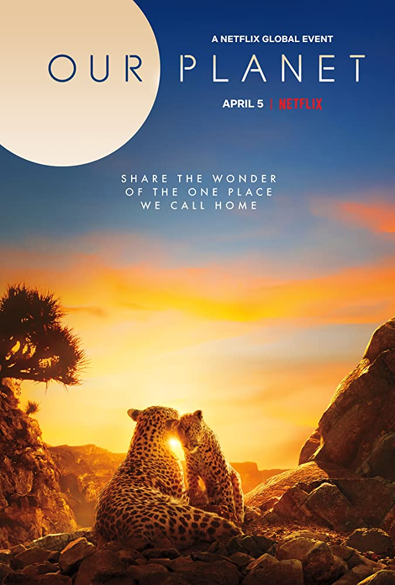

INFORMASI
Kemendikbud x Netflix
Memasuki kalender akademik libur sekolah, Kementerian Pendidikan dan Kebudayaan (Kemendikbud) hari ini mengumumkan kemitraan dengan penyedia layanan hiburan streaming kelas dunia, Netflix. Sebagai bagian dari program Belajar dari Rumah dan untuk pertama kalinya di dunia, film-film dokumenter Netflix akan ditayangkan melalui saluran televisi.
Mulai 20 Juni 2020, film-film dokumenter persembahan Netflix akan tayang perdana setiap Sabtu pukul 21.30 WIB dan tayang ulang setiap Minggu dan Rabu pada pukul 09.00 WIB. Tayangan-tayangan ini akan disiarkan secara terestrial melalui Televisi Republik Indonesia (TVRI).
Program Belajar dari Rumah yang diluncurkan 12 April 2020 merupakan alternatif belajar di tengah pandemi virus corona (COVID-19). Upaya ini dilakukan Kemendikbud untuk memastikan agar dalam masa yang sulit ini masyarakat terus mendapatkan kesempatan untuk melakukan pembelajaran dari rumah, salah satunya melalui media televisi dengan jangkauan terluas di Indonesia.
DAFTAR FILM
Our Planet
Our Planet
adalah series dokumenter alam yang diproduksi oleh Netflix. Series ini merupakan salah satu series asal Inggris yang akan ditayangkan oleh TVRI nantinya. Series ini juga dibuat untuk menyebarkan awareness terhadap kondisi alam dan binatang-binatang yang terancam punah. Ini merupakan salah satu series yang wajib untuk ditonton karena pesan yang dibawa sungguh baik. Nantikan series dokumenter alam ini di TVRI ya!
Street Food: Asia

Street Food: Asia
adalah series ke-2 yang akan ditayangkan di TVRI. Series ini akan membawa kita untuk mengelilingi dunia melalui jajanan kaki lima di berbagai negara di Asia, termasuk Indonesia. Tidak hanya tentang kuliner, namun series ini juga akan membawa kita melalui kisah perjuangan dari salah satu penjual Gudeg di Jogja. Intinya series ini juga wajib ditonton oleh masyarakat Indonesia juga ya!.
Tidying Up with Marie Kondo
Tidying Up With Marie Kondo adalah series realita yang ditayangkan pertama kali pada tahun 2019 yang lalu. Acara ini menampilkan Marie Kondo, seorang konsultan tata rumah asal Jepang yang sangat terkenal karena metode KonMari
-nya. Series ini mengikuti Marie Kondo dalam mengunjungi rumah-rumah untuk dirapihkan dan tentunya mampu membuat kita sebagai penonton untuk tertarik merapihkan rumah kita seperti yang Marie Kondo lakukan. Menarik sekali ya!
Chasing Coral

Berbeda dengan judul-judul diatas, Chasing Coral merupakan film dokumenter berdurasi 1 jam 33 menit yang menyajikan kondisi asli dari kerusakan alam yang terjadi di lautan. Kenyataan pahit yang disajikan dalam film ini mampu memberikan kesadaran bahwa kita sebagai manusia sudah sepatutnya menjaga alam, terutama terumbu karang yang ada di lautan. Jeff Orlowski sebagai produser film ini membawa isu coral bleaching, yaitu fenomena dimana terumbu karang berubah warna menjadi putih pudar yang disebabkan oleh perubahan suhu laut secara mendadak. Jika kita sadar akan keberlangsungan lingkungan maka kita semua wajib untuk menonton dokumenter ini.
Tonton DownloadTENTANG KAMI
A Lifetime learner. Berpengalaman lebih dari 4 tahun mengeksplor mikrokontroller dan sedang mencoba mengekspansi keahlian programming
Born and raised in a heart-warming family in Bandar Lampung. Memulai ketertarikan di bidang programming dan memiliki motivasi yang tinggi dalam mempelajari pengembangan web.
aBorn and raised in a heart-warming family in Bandar Lampung. Memulai ketertarikan di bidang programming dan memiliki motivasi yang tinggi dalam mempelajari pengembangan web.
Saya lahir dan tinggal di jombang. Pekerjaan saya adalah seorang pendidik. motivasi saya mengikiti DTS kominfo adalah ingin mendalami tentang belajar coding yang biasanya sering saya jumpai pada CBT di sekolah saya
Saya tinggal di jombang. Pekerjaan saya adalah seorang pendidik. motivasi saya mengikiti DTS kominfo adalah ingin mendalami tentang belajar coding yang biasanya sering saya jumpai pada CBT di sekolah saya